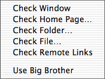
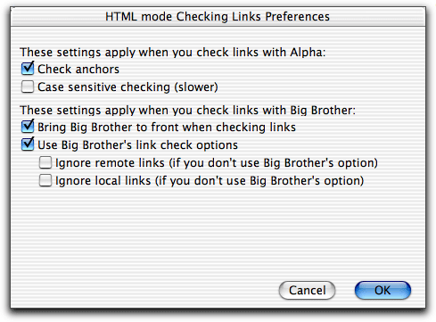

 The menu contains functions to scan files and check that all links, HREFs, SRCs etc. as well as CSS links url("...") point to files which exist. The files which are scanned are the HTML and CSS files. For this to be useful the files in your home page folders must be mirrors of the files at your servers. If you use this function as intended you never have to worry about dead links between your files anymore.
It works as follows: In every file scanned Alpha looks for all link attributes: HREFs, SRCs, etc in the file. If you use the BASE element it will be noticed and used to determine to which URL a link is pointing. Everything inside comments is ignored.
For each link Alpha first determines where it is pointing. Links to remote servers, which you do not have a home page folder for, are ignored. Also, if you have a home page folder for http://www.net/~myplace/, links like http://www.net/file.html are ignored, as they are outside your home page. For all other links, Alpha checks if the file exist.
If any invalid links are found, a window is opened where the lines look as follows:
file.html Line 8: HREF="otherfile.html" file2.html Line 23: (anchor missing) HREF="file.html#anchor" folder:file3.html Line 17: (BASE used) SRC="pic/coolpic.gif"
In the first column is the name of the file with the link, including the path relative to the home page folder. In the second column is the line number where the invalid link is, and in the third column is the link itself. (anchor missing) means that the file exists but that the anchor is missing in the file. (BASE used) means that the file contains a BASE element. Use the up and down arrows to select a line in this window, and carriage return to open the file and select the line with the invalid link.
You can optionally check that the case of the links match the case of the file names on your disk. This can be useful as Mac file names are not case sensitive, while for example unix file names are. Therefore a link can work on your Mac but not work on a unix machine. Checking the case makes link checking slower and is therefore not done by default. See below how to enable case sensitive link checking.
You can fix broken links by selecting a new one. To do this
When the broken link contains an anchor "file.html#anchor", Alpha checks if the new file contains that anchor. If it does, #anchor is added to the new link, otherwise not.
Fixing a link works as long as you do not make any other changes to the file first. Then Alpha may not find the line with the broken link.
Big Brother is a shareware program by François Pottier, Francois.Pottier@inria.fr. You can get Big Brother from his home page.
The big advantage with Big Brother is that it can check all your remote links. It checks local links on your hard disk with about the same speed as Alpha, but Big Brother can run in the background while you do other things. Differences between Alpha and Big Brother are
Some settings are temporarily changed in Big Brother, when you send a file or folder to it. These are
You can set some preferences for how to check links in the dialog box in the menu.
